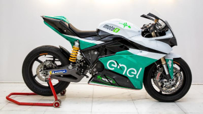

La MotoE, ufficialmente FIM Enel MotoE World Cup, è una classe di moto da corsa elettriche che gareggiano nel Motomondiale. La prima stagione della classe elettrica è nel Motomondiale 2019, accompagnando la MotoGP in quattro appuntamenti europei, per un totale di sei gare. Il primo vincitore della Coppa del Mondo di moto elettrica è l'italiano Matteo Ferrari.

Tutti i team utilizzano le moto elettriche Energica Ego Corsa.
Nella notte tra il 13 e il 14 marzo tutte le moto sono state distrutte da un incendio scoppiato all'interno del paddock del circuito di Jerez. Tutti i team si trovavano nel circuito spagnolo per le prove libere prima dell'inizio del campionato di Coppa del Mondo, inizialmente previsto per il 5 maggio 2019 nel circuito di Jerez. In seguito all'incendio l'inizio del campionato è stato posticipato in modo da consentire al costruttore italiano, Energica, di ricostruire tutte le moto.
| Pilota | Vittorie | Podi | Titoli mondiali |
|---|---|---|---|
| Alex De Angelis | 4 | 40 | 0 |
| Maria Herrera | 0 | 0 | 0 |
| Nicolo Canepa | 0 | 0 | 0 |
| Xavier Simeon | 1 | 6 | 0 |
| Matteo Ferrari | 2 | 3 | 1 |
| Josh Hook | 0 | 0 | 0 |
| Xavi Cardelus | 0 | 0 | 0 |
| Mattia Casadei | 0 | 1 | 0 |
| Lukas Tulovic | 0 | 0 | 0 |
| Bradley Smith | 3 | 29 | 0 |
| Jordi Torres | 1 | 3 | 0 |
| Eric Granado | 2 | 2 | 0 |
| Alejandro Medina | 0 | 0 | 0 |
| Alessandro Zaccone | 0 | 0 | 0 |
| Mike Di Meglio | 6 | 15 | 1 |
| Niki Tuuli | 1 | 1 | 0 |
| Tommaso Marcon | 0 | 0 | 0 |
| Dominique Aegerter | 1 | 7 | 0 |